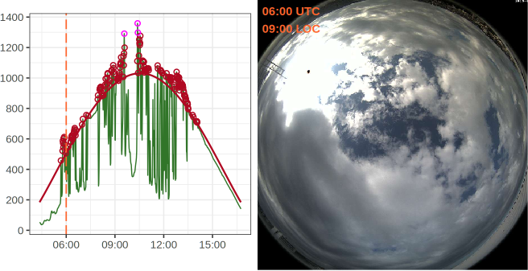

Ηλιακή ακτινοβολία, ατμοσφαιρικά αιωρήματα και νέφη
30 χρόνια μετρήσεων της ηλιακής ακτινοβολίας στη Θεσσαλονίκη
Άμεση ηλιακή ακτινοβολία (DNI)

- Πυρηλιόμετρο CHP-1
- Εγκατάσταση και λειτουργία του οργάνου
- Προγραμματισμός ηλιοστάτη
- Συστηματοποίηση της διαδικασίας μετρήσεων DNI
Μεταβολή της GHI για all-sky

Ημερήσιες αποκλίσεις (%) της GHI για all-sky
Μεταβολή της GHI για clear-sky

Ημερήσιες αποκλίσεις (%) της GHI για clear-sky
Μεταβολή της GHI για cloudy-sky

Ημερήσιες αποκλίσεις (%) της GHI για cloudy-sky
Σωρευτικό άθροισμα αποκλίσεων GHI για all-sky

Σωρευτικό άθροισμα αποκλίσεων GHI για clear-sky

Σωρευτικό άθροισμα αποκλίσεων GHI για cloudy-sky

Επίδραση της SZA για all-sky

Επίδραση της SZA για clear-sky

Επίδραση της SZA για cloudy-sky

Ενίσχυση…


Ενίσχυση από τα νέφη





1. Μηνιαία κλιματολογία ανέφελης GHI

Επιλέξαμε \(\overline{\text{AOD}}-1\sigma\) και \(\overline{\text{WC}}-1\sigma\)
2. Επίδραση του AOD στην GHI

Ικανοποιητική προσέγγιση…

Ημέρες με τουλάχιστον το 80% της ημέρας χωρίς νέφη
Χαρακτηρισμός ενισχύσεων

Ενισχύσεις για το 2005
Πλήθος των γεγονότων CE

Μέση έντασης ενίσχυση

Περίσσεια ακτινοβολίας

Κλιματολογία των CE

Συχνότητα εμφάνισης CE κανονικοποιημένη με το πλήθος των μετρήσεων
Κλιματολογία των ECE

Συχνότητα εμφάνισης ECE κανονικοποιημένη με το πλήθος των μετρήσεων
Κατανομή εντάσεων των CE

.
Διάρκεια συμβάντων CE

.